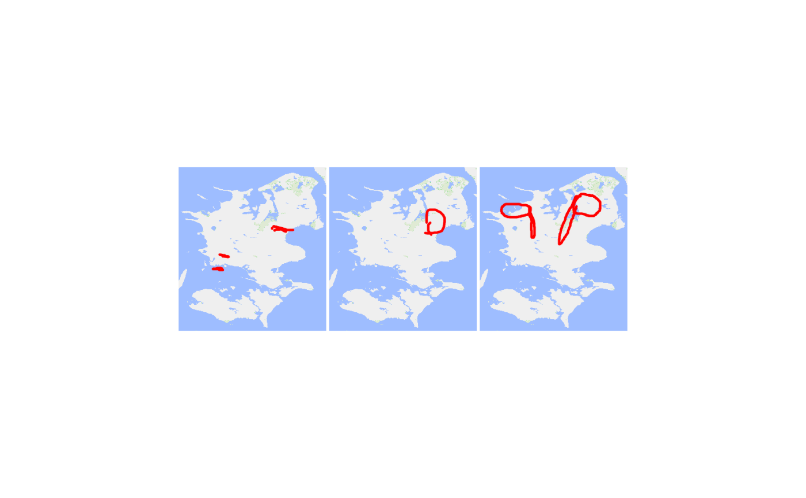
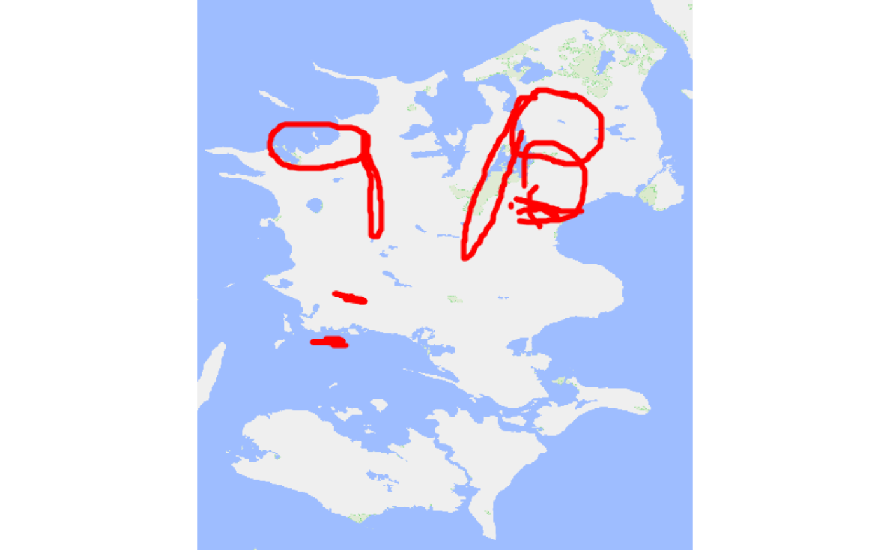

Collates the strokes of several pain drawings into a single pain drawing,
with all strokes (including NA) retained in the original order.
Arguments
- .data
A pdr_tibble (see
pdr_match()). The drawings inpdr_colshould all have the same.units.- pdr_col
The column in
.dataholding the pdr_list to implode (defaultpdr_data). The result has a column of the same name.
Value
A pdr_tibble (see pdr_match()) with one row: id is
"imploded_<time>" and pdr_col holds a pdr_list with a single
pdr_drawing containing all strokes and points of the input drawings.
Stroke indices (.index) in .strokes and .points are renumbered, and
.id is reset to the same "imploded_<time>" value. Any .rgba or
.stencil elements are not carried over.
Details
The function is useful, for instance, for imploding anatomical regions
into a larger anatomical region, which can then be merged (e.g. via
pdr_modify_rgba()) into a single larger region.
NOTE The output of this function is (likely) not of the same length as the input.
If pdr_col holds only one drawing, it is returned as is (as the pdr_list
pulled from .data, not as a pdr_tibble). If the drawings have different
.units, a warning is given and NA is returned. If they have different
canvas widths or heights, a warning is given and the maximum width and
height are used. For .file, .version and .app the common value is kept
if unique, otherwise "multiple". .timestamp is the maximum of the
inputs. See pdr_match() for the terminology (pdr_tibble, pdr_list,
pdr_drawing).
Examples
pdr_example_data |> pdr_implode()
#> # A tibble: 1 × 2
#> id pdr_data
#> <chr> <list>
#> 1 imploded_2026-11-06 15:38:53.552227 <named list [10]>
# Compare plots of three original drawings and the imploded drawing
bg <- pdr_example_file("bg_zealand.png")
three <- pdr_example_data[1:3, ]
three |> pdr_plot_xy(background_image = bg)

three |> pdr_implode() |> pdr_plot_xy(background_image = bg)
